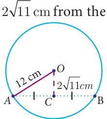
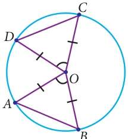
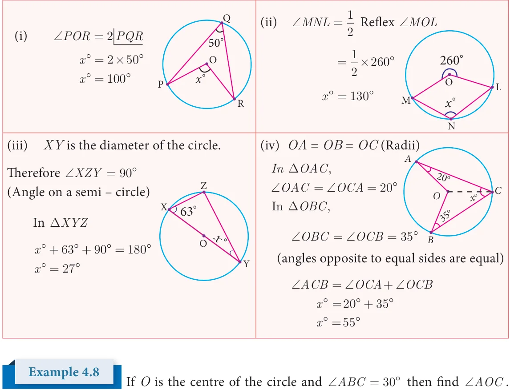
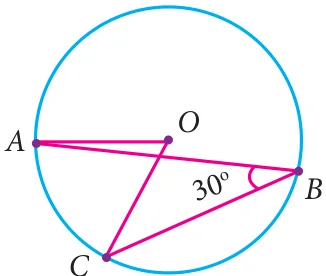
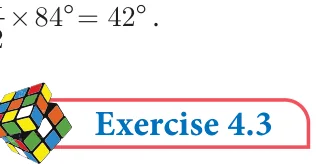

In this chapter, already we come across lines, angles, triangles and quadrilaterals. Recently we have seen a new member circle. Using all the properties of these, we get some standard results one by one. Now, we are going to discuss some properties based on chords of the circle.
Considering a chord and a perpendicular line from the centre to a chord, we are going to see an interesting property.
4.5.1 Perpendicular from the Centre to a Chord
Consider a chord AB of the circle with centre O. Draw OC ^ AB and join the points OA OB, . Here, easily we get two triangles DAOC and DBOC (Fig.4.56).
Can we prove these triangles are congruent? Now we try to prove this using the congruence of triangle rule which we have already learnt.

\(\angle OCA = \angle OCB = 90 ^{\circ}\) (OC \(\perp\) AB) and \(OA =OB\) is the radius of the
circle. The side OC is common. RHS criterion tells us that DAOC and DBOC are congruent. From this we can conclude that \(AC = BC\) . This argument leads to the result as follows. Fig. 4.56 Theorem 7 The perpendicular from the centre of a circle to a chord bisects the chord. Converse of Theorem 7 The line joining the centre of the circle and the midpoint of a chord is perpendicular to the chord.
Find the length of a chord which is at a distance of 2 centre of a circle of radius 12cm.

Solution
Let AB be the chord and C be the mid point of AB Therefore, OC ^ AB Join OA and OC. Fig. 4.57 OA is the radius Note Given \(OC = 2 11cm\) and \(OA = 12cm\) Pythagoras theorem In a right DOAC , One of the most important and using Pythagoras Theorem, we get, \(^{C}\) well known results in geometry is Pythagoras
\(AC =OA - OC\) Theorem. “In a right
\(= 12 - (2 11)\) angled triangle, the \(= 144 - 44 ^{A} ^{B}\) square of the hypotenuse \(= 100cm\) is equal to the sum of the squares of _{2} the other two sides”.
\(AC = 100cm\)
\(AC = 10cm\) Application of this theorem is most Therefore, length of the chord \(AB = 2AC\) useful in this unit.
\(= 2 \times 10cm = 20cm\)
In the concentric circles, chord AB of the outer circle cuts the inner circle at C and D as shown in the diagram. \(^{O}\) Prove that, \(AB - = _{A} _{C} _{M} _{D} _{B}\)
Fig. 4.58
Solution
Given : Chord AB of the outer circle cuts the inner circle at C and D.
To prove : \(AB - CD = 2AC\)
Construction : Draw OM ^ AB
Proof : Since, OM ^ AB (By construction)
Also, OM ^CD
Therefore, \(AM = MB\) ... (1) (Perpendicular drawn from centre to chord bisect it)
\(CM = MD\) ... (2)
Now, \(AB - CD = 2AM - 2CM\)
\(= 2(AM -\) CM) from (1) and (2)
\(AB - CD = 2AC\)
Progress Check
- 1.The radius of the circle is 25 cm and the length of one of its chord is 40cm. Find
the distance of the chord from the centre.
- 2.Draw three circles passing through the points P and Q, where \(PQ = 4cm\).
4.5.2 Angle Subtended by Chord at the Centre
Instead of a single chord we consider two equal chords. D Now we are going to discuss another property.
Let us consider two equal chords in the circle with O centre O. Join the end points of the chords with the centre to get the triangles DAOB and DOCD , chord \(AB =\) chord A CD (because the given chords are equal). The other sides
are radii, therefore OA=OC and OB=OD. By SSS rule, the
Fig. 4.59
triangles are congruent, that is \(\triangle OAB \equiv \triangle OCD\) . This gives mÐAOB \(= m \angle COD\). Now this leads to the following result.
Theorem 8 Equal chords of a circle subtend equal angles at the centre.
Activity \(- 5\) Procedure
- 1.Draw a circle with centre O and with suitable radius.
- 2.Make it a semi-circle through folding. Consider the point A, B on it. \(^{A}\)
- 3.Make crease along AB in the semi circles and open it. \(_{D}^{B}\)
- 4.We get one more crease line on the another part of semi circle, _{C}
name it as CD (observe \(AB =\) CD) _{O}
- 5.Join the radius to get the DOAB and DOCD .
- 6.Using trace paper, take the replicas of triangle DOAB andDOCD.
- 7.Place these triangles DOAB and DOCD one on the other. D
Observation \(^{C}\)
- 1.What do you observe? Is \(\triangle OAB \equiv \triangle OCD\) ? O
- 2.Construct perpendicular line to the chords AB and CD passing
through the centre O. Measure the distance from O to the chords. B
Fig. 4.60
Now we are going to find out the length of the chords AB and CD, given the angles subtended by two chords at the centre of the circle are equal. That is, \(\angle AOB = \angle COD\) and the two sides which include these angles of the DAOB andDCOD are radii and are equal.

By SAS rule, \(\triangle AOB \equiv \triangle COD\) . This gives chord \(AB =\) chord CD. Now let us write the converse result as follows:
Converse of theorem 8 Fig. 4.61
If the angles subtended by two chords at the centre of a circle are
equal, then the chords are equal.
In the same way we are going to discuss about the distance from the centre, when the equal chords are given. Draw the perpendicular OL ^ AB and ^ . From theorem 7, these perpendicular lines divide the chords equally. So \(AL =CM\) . By comparing the DOAL and DOCM , the angles \(\angle OLA = \angle OMC = 90 ^{\circ}\) and \(OA =OC\) are radii. By RHS rule, the \(\triangle OAL \equiv \triangle OCM\) . It gives the distance from the centre \(OL =\) and write the conclusion as follows. Fig. 4.62 Theorem 9 Equal chords of a circle are equidistant from the centre. Let us know the converse of theorem 9, which is very useful in solving problems.

Converse of theorem 9
The chords of a circle which are equidistant from the centre are equal.
4.5.3 Angle Subtended by an Arc of a Circle

Here AB is a minor arc in Fig.4.65, a semi circle in Fig.4.66 and a major arc in Fig.4.67.
The point C makes different types of angles in different positions (Fig. 4.65 to 4.67). In all these circles, AXB subtendsÐAOB at the centre and ÐACB at a point on the circumference of the circle.
We want to prove \(\angle AOB =2 \angle ACB\) . For this purpose extend CO to D and join CD.
\(\angle OCA= \angle OAC\) since \(OA = OC\) (radii)
Exterior angle = sum of two interior opposite angles.
\(\angle AOD = \angle OAC + \angle OCA\)
\(= 2 \angle OCA\) .... (1) Progress Check
Similarly, i. Draw the outline of different size \(\angle BOD = \angle OBC + \angle OCB\) of bangles and try to find out the \(=2 \angle OCB\) .... (2) centre of each using set square. From (1) and (2), ii. Trace the given cresent and complete as full moon using ruler
\(\angle AOD + \angle BOD = 2( \angle OCA+ \angle\) OCB)
Finally we reach our result \(\angle AOB = 2 \angle ACB\) .
From this we get the result as follows :
Theorem 10
Fig. 4.68
The angle subtended by an arc of the circle at the centre is double the angle subtended by it at any point on the remaining part of the circle.


Solution
Using the theorem the angle subtended by an arc of a circle at the centre is double the angle subtended by it at any point on the remaining part of a circle.

(see Fig. 4.73)

Solution
Given \(\angle ABC = 30 ^{\circ}\)
\(\angle AOC = 2 \angle ABC\) (The angle subtended by an arc at the centre is double the angle at any point on the Fig. 4.73 circle)
\(= 2 \times 30 ^{\circ} = 60 ^{\circ}\)
Now we shall see, another interesting theorem. We have learnt that minor arc subtends obtuse angle, major arc subtends acute angle and semi circle subtends right angle on the circumference. If a chord AB is given and C and D are two different points on the circumference of the circle, then find ÐACB and ÐADB . Is there any difference in these angles?
4.5.5 Angles in the same segment of a circle

Consider the circle with centre O and chord AB. C and D are the points on the circumference of the circle in the same segment. Join the radius OA and OB.
\(\frac{1}{2} \angle AOB = \angle ACB\) (by theorem 10) Fig. 4.74
and \(\frac{1}{2} \angle AOB = \angle ADB\) (by theorem 10)

\(\angle ACB = \angle ADB\)
This conclusion leads to the new result.
Theorem 11 Angles in the same segment of a circle are equal.
In the given figure, O is the center of the circle. If the measure of
\(\angle =48 ^{\circ}\) , what is the measure of ÐP ?

Solution
Given \(\angle OQR=48 ^{\circ}\) .
Therefore, ÐORQ also is \(48 ^{\circ}\) . (Why?__________)
ÐQOR \(=180 ^{\circ} - (2 \times 48 ^{\circ} )=84 ^{\circ}\) .
Fig. 4.75
The central angle made by chord QR is twice the inscribed angle at P.
Thus, measure of ÐQPR \(= \frac{1}{2} \times ^{\circ} = ^{\circ}\) .

- 1.The diameter of the circle is 52cm and the length of one of its chord is 20cm. Find the
distance of the chord from the centre.
- 2.The chord of length 30 cm is drawn at the distance of 8cm from the centre of the
circle. Find the radius of the circle
- 3.Find the length of the chord AC where AB and CD are the two diameters
perpendicular to each other of a circle with radius 4 2 cm and also find ÐOAC and ÐOCA.
- 4.A chord is 12cm away from the centre of the circle of radius 15cm. Find the length of
the chord.